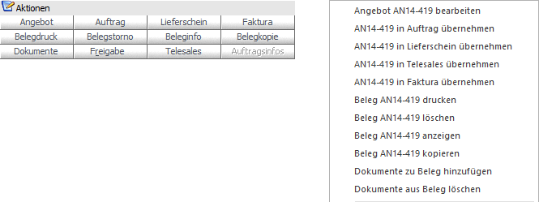

In dem Register "Allgemein" findet die Grundselektion und die Anzeige der Belege statt. Zusätzlich können die Belege bearbeitet bzw. neue Belege erfasst werden.

Das Bearbeiten bzw. die Neuanlage von Belege findet entweder über die Buttons im Bereich "Aktionen" oder über die rechte Maustaste statt. Hierbei sind die Bearbeitungsmöglichkeiten immer abhängig vom Beleg, welcher gerade im Fokus liegt.
Aktionen / rechte Maustaste

Ø Angebot
Durch Anwahl des Buttons "Angebot" kann ein offenes Angebot bearbeitet werden.
Ø Auftrag
Durch Anwahl des Buttons "Auftrag" kann ein offener Auftrag bearbeitet oder ein offenes Angebot in die Belegstufe "Auftrag" übernommen werden.
Ø Lieferschein
Durch Anwahl des Buttons "Lieferschein" kann ein offener Lieferschein bearbeitet oder ein offenes Angebot / offener Auftrag in die Belegstufe "Lieferschein" übernommen werden.
Ø Faktura
Durch Anwahl des Buttons "Faktura" kann eine noch nicht gebuchte Faktura bearbeitet oder ein offenes Angebot / offener Auftrag / offener Lieferschein in die Belegstufe "Lieferschein" übernommen werden.
Ø Belegdruck
Der Beleg wird auf dem Drucker bzw. Spooler ausgegeben. Für das Autoarchiv wird hierbei kein neuer Eintrag erzeugt.
Ø Belegstorno
Der bestehende Beleg wird gelöscht bzw. storniert. Nähere Informationen bezüglich des Stornierens eines Beleges entnehmen Sie bitte dem WinLine FAKT2 - Handbuch, Kapitel "Beleg stornieren".
Ø Beleginfo
Der markierte Beleg wird am Bildschirm dargestellt. Hierbei ist das Verhalten abhängig von der Definition der FAKT-Parameter (WinLine START - Applikationsparameter - FAKT-Parameter - Belege - Belegarchivierung - Option "Archivbeleg bei der Beleginfo verwenden" -> standardmäßig aktiviert).
ü Button "Beleginfo" bzw.
Doppelklick auf den Beleg
Es wird das letzte Druckbild vom Beleg aus dem
Autoarchiv am Bildschirm dargestellt.
ü Button "Beleginfo" + STRG-Taste
bzw. Doppelklick + STRG-Taste auf den Beleg
Es wird die "Archiv - Vorschau"
geöffnet und dort das letzte Druckbild vom Beleg aus dem Autoarchiv
dargestellt.
Hinweis
Wenn gemäß den Applikationsparametern der WinLine FAKT für das Autoarchiv mehrere Versionen gespeichert werden sollen (WinLine START - Applikationsparameter - FAKT-Parameter - Belege - Belegarchivierung - Anzahl der Versionen pro Belegstufe) und der Beleg bereits mehrfach gedruckt wurde, dann steht die Buttons "ältere Version" bzw. "jüngere Version" zur Verfügung. Über diese kann eine andere Druckversion ausgewählt werden.
ü Button "Beleginfo" + SHIFT-Taste
bzw. Doppelklick + SHIFT-Taste auf den Beleg
Der Beleg wird neu gerechnet und
am Bildschirm dargestellt.
Ø Belegkopie
Der bestehende Beleg kann auf einen anderen Kunden bzw. Lieferanten dupliziert werden.
Ø Dokumente
Durch Anwahl dieses Buttons können die Archivdokumente des Belegs angezeigt werden.
Hinweis
An folgenden Stellen können Archivdokumenten einem Beleg hinzugefügt werden:
ü Belegerfassung => Drag & Drop im Belegkopf
ü Belegmanagement => rechte Maustaste (Funktion "Dokumente zu Beleg hinzufügen") oder Drag & Drop
ü Belege / Belege => Matchcode - rechte Maustaste (Funktion "Dokumente zu Beleg hinzufügen") oder Drag & Drop
ü Belegkurzinfo => Drag & Drop
ü Batchbeleg => Dokumentenangabe per Spalte "DokumentenID"
Ø Freigabe
Falls für einen Beleg eine Freigabe erforderlich ist, kann diese durch diesen Button erfolgen.
Ø Telesales
Wird ein (noch nicht erledigter) Beleg der Stufen Angebot, Auftragsbestätigung, nicht gerechnet / nicht gedruckt oder WEBTrader-Bestellung angewählt, so kann dieser Beleg im Telesales geöffnet werden.
Ø Auftragsinfos
Durch Anwahl dieses Buttons kann die Auswertung "Auftragsverfolgung" für einen selektierten Kundenauftrag bzw. einer Lieferantenbestellung ausgegeben werden. In der Auswertung kann die zum Auftrag gehörige Lieferantenbestellungen sowie bereits angelegte Produktionsaufträge (und deren Lieferantenbestellungen) zu Informationszwecken aufgelistet werden bzw. die zur Bestellung gehörige Aufträge sowie bereits angelegte Produktionsaufträge.
Ø Dokumente zu Beleg hinzufügen (rechte Maustaste)
Mit Hilfe der rechten Maustaste können externe Dokumente dem Beleg als Archiveinträge zugeordnet werden. Dabei werden die folgenden Schlagwörter für den Archiveintrag automatisch gesetzt:
ü Kontonummer
ü Kontoname
ü Tagesdatum
ü Angebotsnummer und -datum, wenn der Beleg als Angebot gedruckt ist
ü Auftragsnummer und -datum, wenn der Beleg als Auftrag gedruckt ist
ü Lieferscheinnummer und -datum, wenn der Beleg als Lieferschein gedruckt ist
ü Rechnungsnummer und -datum, wenn der Beleg als Rechnung gedruckt ist
ü Projektnummer (aus dem Belegkopf), wenn sie im Beleg eingetragen
Hinweis
Neben der Funktion "Dokumente zu Beleg hinzufügen" können Dokumente per Drag & Drop zu einem Beleg zugeordnet werden (auch ggf. mehrere Dokumente auf einmal). Die Dokumente können dabei aber nur auf den zuvor ausgewählten Beleg fallengelassen werden.
Ø Dokumente aus Beleg löschen (rechte Maustaste)
Wenn bei einem Beleg externe Dokumente hinterlegt wurden, so können diese mit Hilfe der Funktion "Dokumente aus Beleg löschen" entfernt werden. Hierbei werden (so wie beim Löschen im Archiv) die Einträge aus der Archivtabelle, die Dokumente selbst aus dem Archiv und der Verweis im Beleg gelöscht.
Ø Neuer Beleg
Durch die Anwahl einer Belegstufe per Doppelklick (im Unterregister "Übersicht") wird das Fenster "Belege - Erfassen" geöffnet und das Konto, sowie die Belegstufe vorbelegt. Mit Hilfe dieses Programm kann in die Belegerfassung gewechselt und ein Beleg erfasst werden.